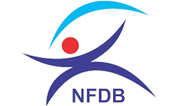
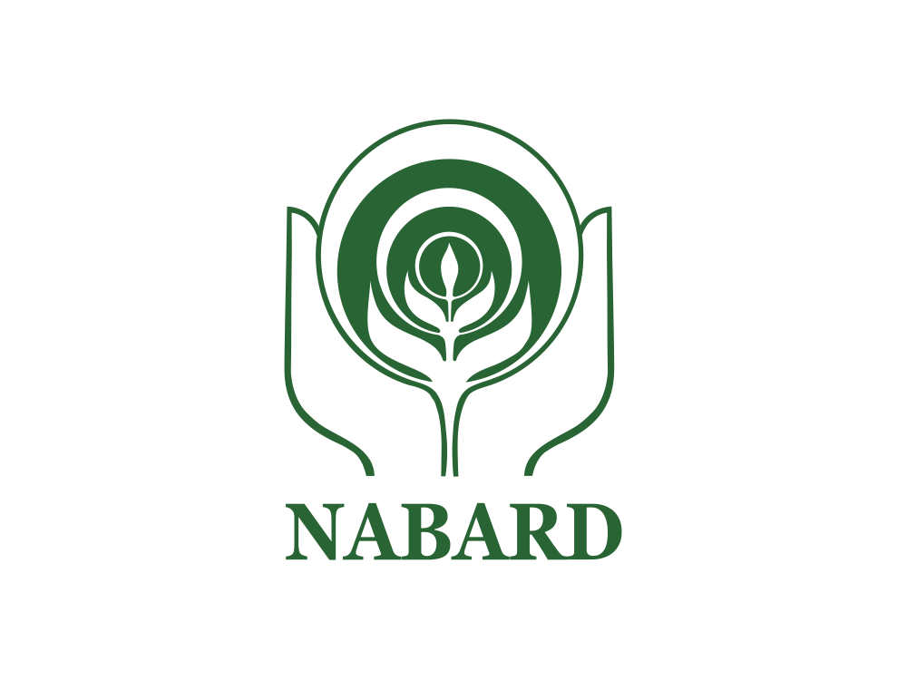
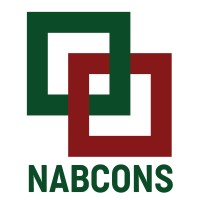
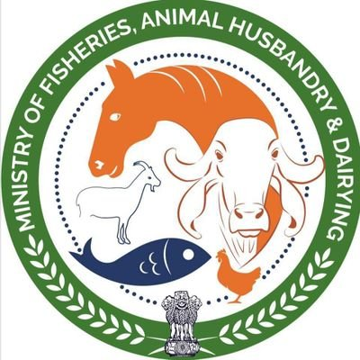
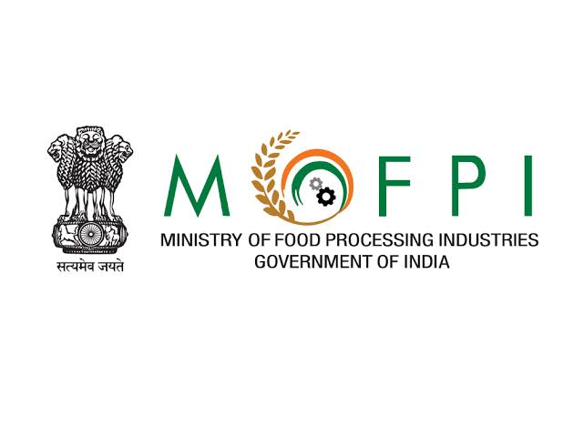

01
Detailed Project Reports (DPR)
Government-compliant and technically rigorous DPRs for successful applications.
Start with the right water, land and environmental conditions. We assess the site before capital is committed.
Each stage above is a real project decision. Scroll through the sequence to see how Blue Chain Aqua connects technical planning, government schemes, finance and implementation into one continuous pathway.
India is the 2nd largest fish producer globally, contributing approximately 8% of global fish production. The government has committed ₹20,050 crore under PMMSY — targeting 22 MMT fish production and 5.5 lakh new jobs.
Know How We Help →Government-compliant and technically rigorous DPRs for successful applications.
Cost estimation, loan structuring, subsidy mapping and ROI projections.
Site analysis, water, soil, species viability and regulatory compliance.
Measure production outcomes, economic impact and scheme compliance.
From inputs to market — improve profitability across the value chain.
End-to-end support with NFDB, PMMSY, NABARD and banks.
A structured consulting pathway that brings technical feasibility, business planning, financial clarity and execution together before you commit major capital.
Understand whether the proposed aquaculture project is technically and commercially workable before moving into detailed investment.
Translate the validated idea into a practical business plan with project scope, operating assumptions and financial visibility.
Prepare the project for funding and implementation with documentation, scheme alignment and practical execution support.
Official portals for fisheries, aquaculture, rural finance, food processing, horticulture and livestock programmes. Select an organization to visit its official website.

NFDBFisheries and aquaculture development, infrastructure and sector support.
Visit official website ↗Official digital platform for fisheries and aquaculture stakeholders, registration and related fisheries services.
Visit official website ↗
NABARDDevelopment finance, rural infrastructure and agriculture-linked funding ecosystem.
Visit official website ↗
NABCONSConsultancy and advisory services across agriculture, rural development and allied sectors.
Visit official website ↗
MoFAHDCentral ministry portal covering fisheries, aquaculture, animal husbandry and dairying.
Visit official website ↗
MoFPIFood processing schemes, infrastructure, value addition and sector development.
Visit official website ↗Horticulture development, post-harvest infrastructure and related schemes.
Visit official website ↗ NLM
NLM
Official Department of Animal Husbandry & Dairying programme covering entrepreneurship, breed development, feed and fodder, extension and innovation.
Visit official NLM page ↗Six clear stages from assessment through sanction and implementation.
Assess profile, land, water and finances.
Find the best-fit schemes and funding pathway.
Prepare technical and financial documents.
Liaise with authorities and manage approvals.
Coordinate with banks and government.
Guidance until the project is operational.
“From the first application to the final harvest — we're with you at every step.”
Explore our completed project portfolio across India. Click a highlighted state on the map to view the projects associated with that location.
Highlighted states have projects. Click a state to view its project list.
Our team understands NFDB, Ministry of Fisheries and state requirements.
Civil engineering, aquaculture science and financial analysis under one roof.
Support with project finance, banking requirements, loan documentation and financial planning.
Professional support for financial analysis, project documentation, accounting and compliance requirements.
Maximise subsidy benefit while protecting project viability.
“Blue Chain Aqua made the complex simple. We got our sanction without any hassle.”
— Aquaculture Farmer, Andhra PradeshTurn your aquaculture vision into a sanction-ready project.
Share your doubt and we'll take the conversation directly to WhatsApp.
We use contact details submitted through this website only to respond to consultation and project enquiries. We do not publish or sell submitted contact information.
Website information is provided for general project-planning purposes. Final technical, financial, regulatory and funding decisions are confirmed for each project after assessment.